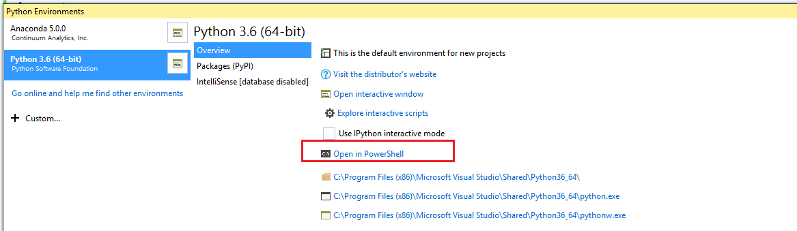
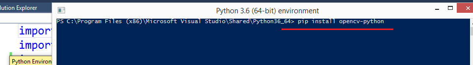
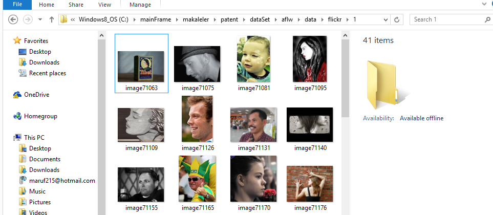
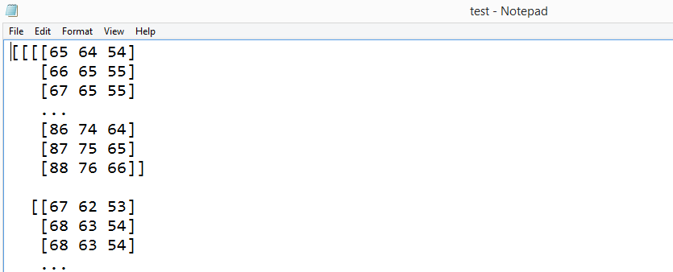
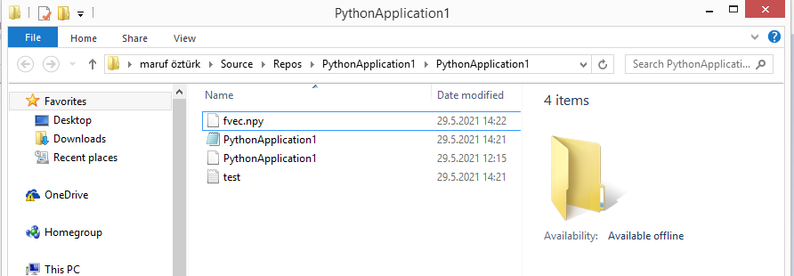

How to convert .jpg files to numpy array to perform Convolutional Neural Network?
If you intend to perform convolutional neural network on R, Pillow and Anaconda settings can cause problems if you do not use images converted to numpy array format like Mnist dataset. To solve this problem, image files such as .jpg should be converted to numpy array format in python environment. In this article, the necessary procedures are detailed as follows:
Python Application project is created on Visual Studio.
Opencv package needs to be installed. For this, Tools=>Python=>Python Environments is selected.
Select "Open in PowerShell" on the screen that appears. 
Install opencv by typing "pip install opencv-python" command. However, it should be noted that Visual Studio must be opened in admin mode to avoid an error.
After the installation is complete, the following library sections are added to the .py file.
Here cv2 represents opencv. Required for capturing glob image files. Np definition is an abbreviation for numpy library.
import cv2import globimport numpy as np
Two arrays are defined. X_data is the array inserted after the images were taken. X_array is a numpy array of images in .jpg format. The conversion takes place for all images in the corresponding folder in the loop. Each image file path is shown while the codes are running.
X_data = []X_array=[]files = glob.glob ("C:/mainFrame/makaleler/patent/dataSet/aflw/data/flickr/1/*.jpg")for myFile in files:print(myFile)image = cv2.imread (myFile) X_data.append (image)X_array.append(np.array(X_data))
The picture folder view is as follows:

The following lines are added so that the converted images can be saved in .txt and .npy formats. The .txt file is as follows. The files are created inside the project folder.
np.savetxt('test.txt',X_array,fmt='%5s',delimiter=',')np.save("fvec.npy", X_array)


All the codes are as follows. The resulting two different data sets can be used both as .txt and as .npy on the R package.
After copying the .npy file to the working folder to load the .npy file on R, the data set can be imported into the R environment with the following codes. For this, the "RcppCNPy" library must be loaded in the R environment with the install.packages ("RcppCNPy") command.
library(RcppCNPy)npData <- npyLoad("fvec.npy")
References
Eddelbuettela, D., & Wub, W. RcppCNPy: Reading and writing NumPy binary files.